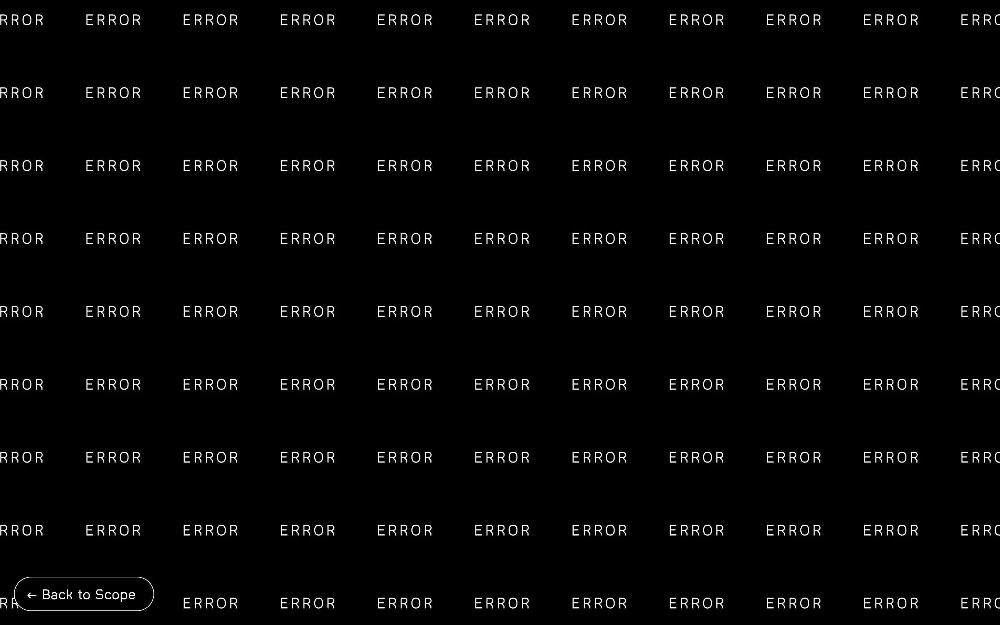
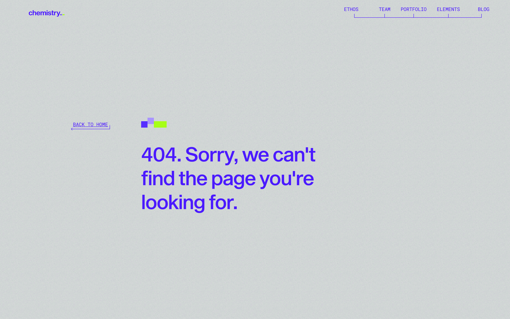
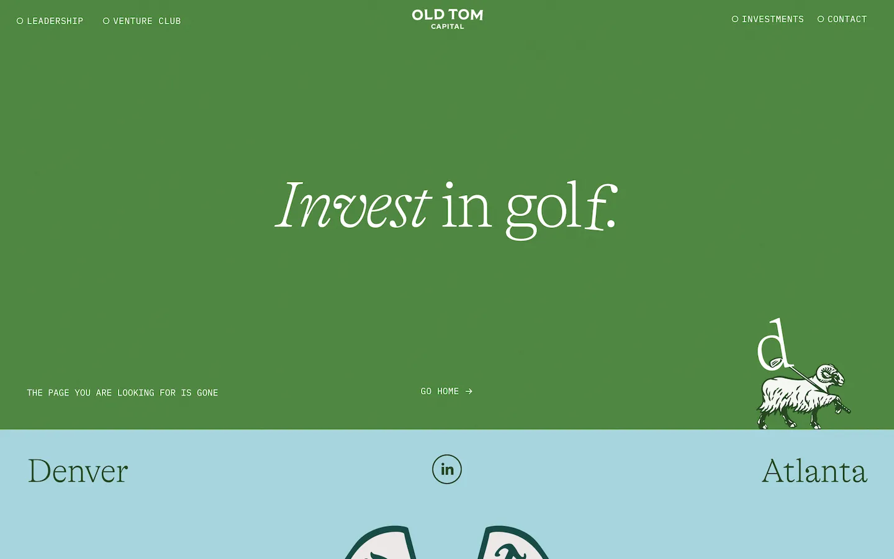
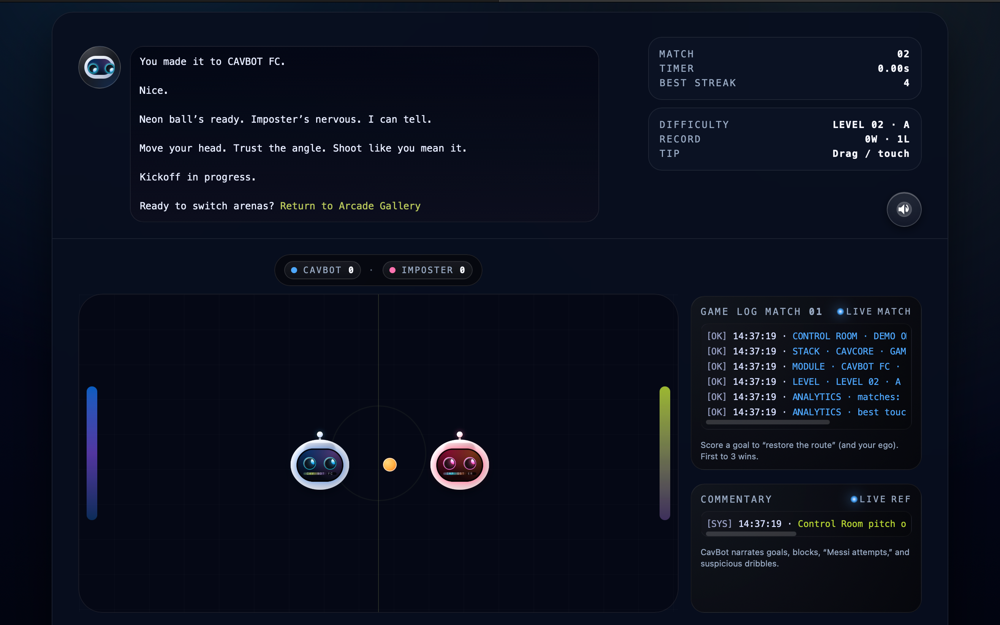

Trust
A messy 404 reads like downtime. A calm 404 reads like intention — and the visitor stays.
Clarity
Stability
A 404 page is not a dead end — it’s a trust moment. Done wrong, it reads as “the site is broken.” Done right, it becomes a recovery surface: clear exits, calm design, and measurable signal.
This guide explains what a 404 communicates, why it affects sessions, how search engines interpret broken routes, and what “bad → okay → good → elite” looks like across real production-ready surfaces.
Most 404s happen when a visitor is already trying. They clicked a link, trusted a page, and expected continuity. Your job is to keep the session alive — and prove the site is under control.
A messy 404 reads like downtime. A calm 404 reads like intention — and the visitor stays.
The best 404s give exits: home, search, categories, and the nearest “good” route to continue.
A 404 is real data: broken referrers, outdated pages, campaign leaks, and route regressions.
You don’t need to panic about a single 404 — but you do need a clean posture. The goal is simple: return accurate status codes, avoid confusing “soft 404” pages, and keep internal linking disciplined.
This is the “CavBot” philosophy applied to a 404: calm surface, strong structure, and a clear next step. A visitor should never feel the site is down — only that the route is missing.
Say it plainly: the page doesn’t exist (or moved). Keep the message short and confident. Avoid panic language. Avoid humor that feels careless.
Provide the next move immediately: Home, Product, Pricing, Command Center, Search, or “most visited” routes.
A 404 should load instantly, even on weak connections. Heavy animation is optional — never required.
Track the session moment: the view, the referrer, and whether the visitor recovered or left. This turns “random broken links” into actionable insight.
A side-by-side visual framework showing what each 404 quality tier communicates, what it breaks, and what creates a reliable, memorable recovery experience.




If these are true, your 404 is “production-grade.” If any are false, fix them before you scale traffic.
If your 404 is already a designed experience, CavBot can instrument it as a clean signal stream and map what broke: referrers, missing routes, recovery actions, and session outcome.